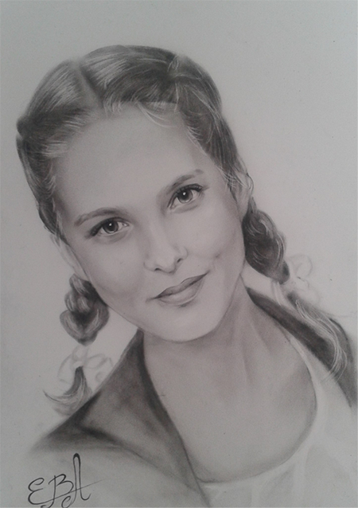
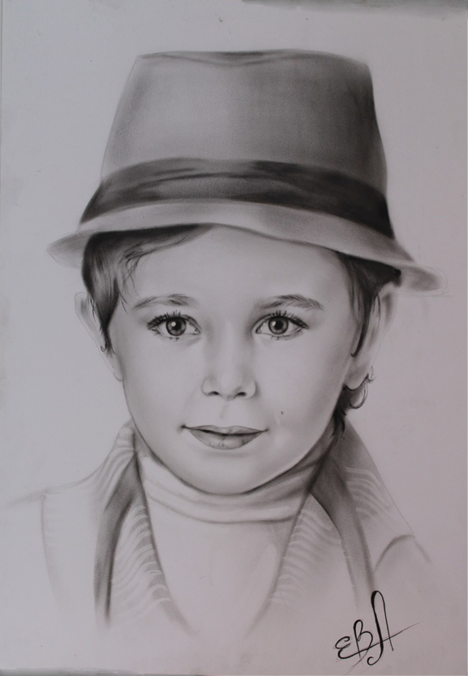
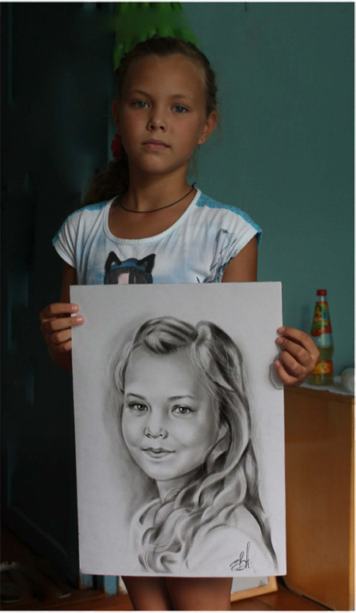
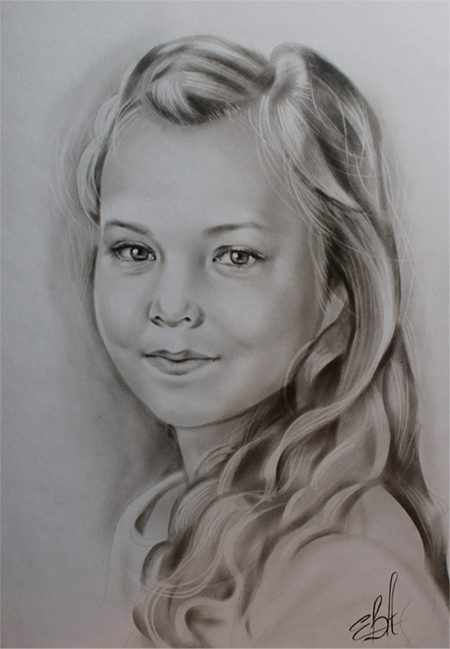

Сухая кисть
Техника портрета и методы рисования «сухая кисть» - растёртые кистями краски на бумаге или ткани. Почему же называют эту технику «сухая кисть»? На самой кисти обычно используется очень мало краски, тончайший слой, который равномерно распределён по волосинкам кисти. На палитре выдавлено и растёрто немного чёрной масляной краски. Немного мокнув кистью в краску растираем её на палитре, так, чтобы кисть была на самом деле почти сухая, потом на основу акварельной бумаги или ткани растиранием этой кистью наносится очень тонкий слой краски. С первого взгляда техника «сухая кисть» очень похожа на нарисованные портреты карандашом.
 
Истоки и происхождение техники «сухая кисть»
Метод «сухой кисти» впервые начал своё существование приблизительно в середине ХХ века, советские художники исполняли графические и цветные портреты растирая кистями краску на белой хлопчатобумажной материи.
«Сухая кисть» в наше время
В современном изобразительном искусстве «сухая кисть» воспринимается, как нетрадиционная техника рисования, как правило её используют в основном свободные художники Арбата. Не в одном художественном учебном заведении этой технике рисования не обучают, какая либо новая техника рисования просто не может быть признана в академических кругах по различным консервативным устоям, не смотря на то, что мы живем уже в ХXI веке и портреты в этой блистательной технике рисования имеют большую популярность. На сегодняшний день в среде свободных художников эта техника рисования настоящий лидер и это не спроста, потому как, «сухая кисть» имеет большой спрос среди заказчиков.
 
Стоимость портрета «сухая кисть»
Формат А3 (297 x 420)
1 человек - 1100 руб.
2 человека - 1500 руб.
3 человека - 2000 руб.
Формат А2 (420 x 594)
1 человек - 1300 руб.
2 человека - 2000 руб.
3 человека - 2400 руб.
Доставка «Почтой России» - 400 руб.